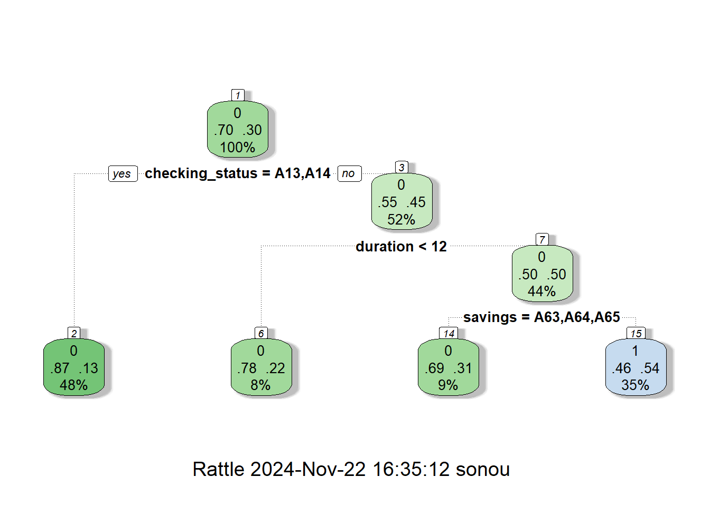
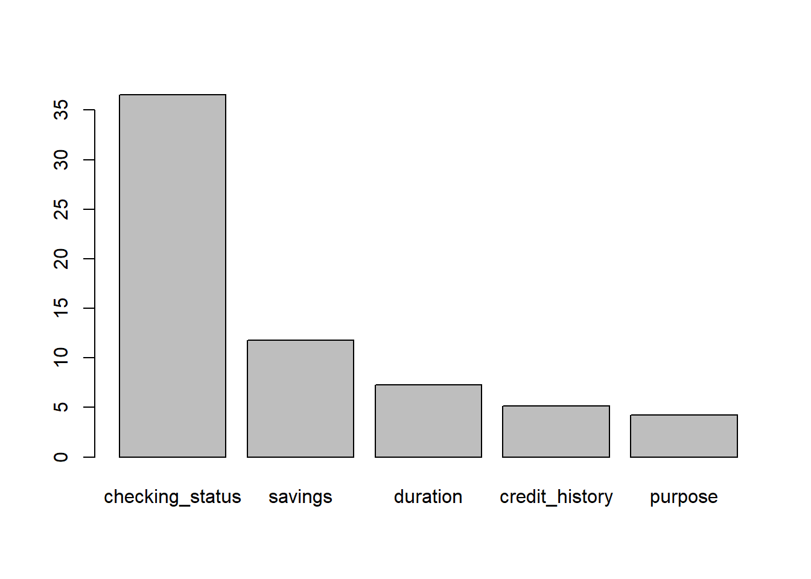
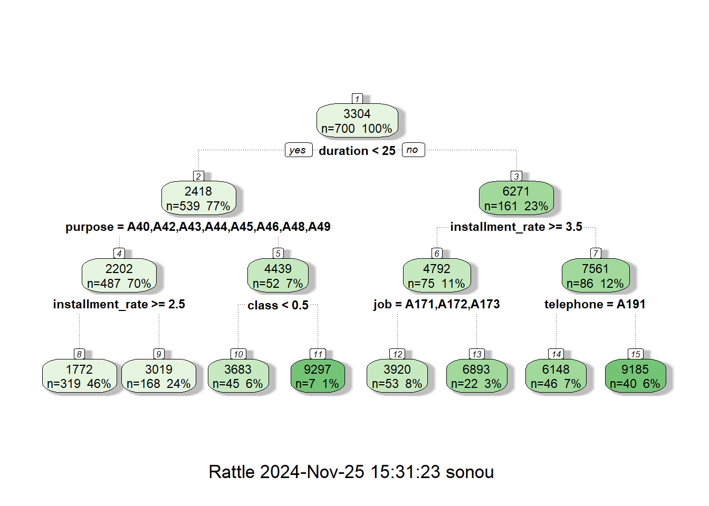
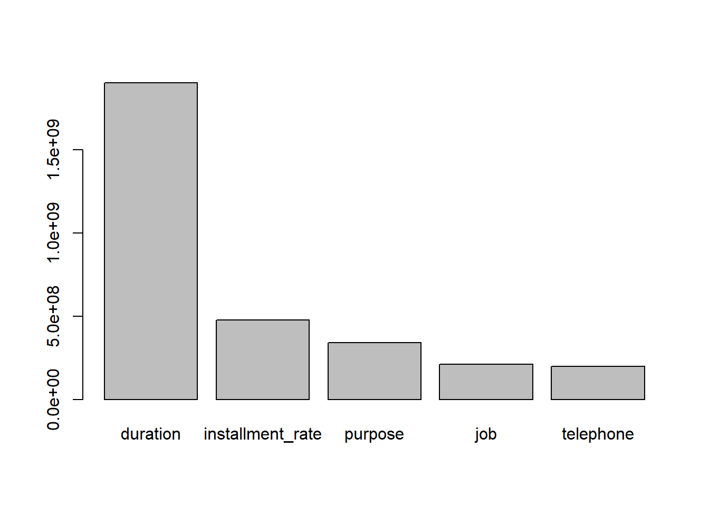

install.packages(c("sp",'xts','zoo'))
install.packages("https://cas.uqam.ca/pub/src/contrib/CASdatasets_1.2-0.tar.gz",
repos = NULL,
type = "source")AYU - Pod Week 6
Instruction
Open the Rmarkdown file of this assignment (link) in Rstudio.
Right under each question, insert a code chunk (you can use the hotkey Ctrl + Alt + I to add a code chunk) and code the solution for the question.
Once you are done answering all the question, Knit the file (Use: Ctrl + Shift + K or Click to Knit -> Knit to pdf or Word) to convert the Rmarkdown file into a pdf or word file to submit to Canvas.
1. Sample Codes
1.1 Classification Tree
In this example, we will work with the German Credit dataset in the CASdatasets library. If you have not installed the library yet, use
to install the library. To load the dataset, use data(credit). This dataset contains information of 1,000 credit records. It is a consumer credit files, called the German Credit dataset in Tuff’ery (2011) and Nisbet et al. (2011). New applicants for credit and loans can be evaluated as good or bad payers using 21 explanatory variables.
To know more about the dataset, type ?credit to the console.
We will train a decision tree to predict the class variable. This variable takes binary values: 0 stands for good and 1 bad (or credit-worthy against not credit-worthy, or no non-payments against existing non-payments).
We first load the necessary libraries and data. Then we change the name of the target variable class to target using the mutate function. Having the same target name for all the target makes this codes more reusable for other modeling tasks.
library(CASdatasets)
library(tidyverse)
library(caret)
# load the credit dataset
data(credit)
# create df and rename the variable class to target
df <- as_tibble(credit)
df <- rename(df, target=class)
# change target to categorical variable
df$target = as.factor(df$target)We could train a classification tree on the entire dataset. However, we will use the statistical learning approach to train the model on only a portion of the data and use the remaining unused data for testing the accuracy of the model. To do this, we first split the data into 70% training and 30% testing.
library(caret)
set.seed(2020)
splitIndex <- createDataPartition(df$target, p = .70,
list = FALSE)
df_train <- df[ splitIndex,]
df_test <- df[-splitIndex,]Now we will use the rpart function in the rpart library to train a decision tree. We set the maximum depth of the tree to be 3 (maxdepth = 3)
library(rpart) #load the rpart package
# Create a tree
tree_model <- rpart(target ~ ., data = df_train,
control = rpart.control(maxdepth = 3))Notice that int ehe rpart function we used target ~ . to indicate that the predictors are all the remaining variables. If we want, say duration and credit_history to be our predictors, we can use: target ~ duration + credit_history, for example.
Next we want to visualize this tree. We will call the fancyRpartPlot in the rattle package.
library(rattle)
fancyRpartPlot(tree_model)
A nice feature of a decision tree is that it can rank variables based on the variables’ importance.
tree_model$variable.importancechecking_status savings duration credit_history purpose
36.549990 11.805346 7.251034 5.127909 4.255073
age credit_amount
3.559540 3.454994 # plot the top 5 importance variable used in predicting class
barplot(tree_model$variable.importance[1:5])
Finally, we want to evaluate this tree. We will use the tree to make predictions on the test dataset and compare the predictions with true value to determine the accuracy of the model.
# make predictions on test data
pred <- predict(tree_model, df_test, type = "class")
#Evaluate the predictions
cm <- confusionMatrix(data = pred,
reference = df_test$target,
positive = "1")
cm$overall[1]Accuracy
0.71 1.2 Random Forest for classification
We can train a random forest using either the randomForest package or the ranger package. Both of these packages have the parameter mtry, which is the number of variables considered at each split when creating the trees (notice that a decision tree in a forest does not consider all the variables at each split to decide the best split). We can set the number of trees in the forest by the parameter ntree for the randomForest package or num.trees for the ranger package.
The codes are as follows.
library(randomForest)
forest_model = randomForest(target ~ .,
data=df_train,
ntree = 500,
mtry = 3)
pred <- predict(forest_model, df_test, type = "class")
cm <- confusionMatrix(data = pred,
reference = df_test$target, positive = "1")
cm$overall[1] Accuracy
0.7733333 library(ranger)
forest_model <- ranger(target ~ .,
data=df_train,
importance='impurity',
mtry=3,
num.trees = 500,)
pred <- predict(forest_model, df_test, type = "response")
cm <- confusionMatrix(data = pred$predictions,
reference = df_test$target, positive = "1")
cm$overall[1]Accuracy
0.79 1.3. Practice 1
We will work with the Actuarial Loss dataset. This dataset includes realistic, synthetically generated worker compensation insurance policies, all of which have had an accident. For each record there is demographic and worker related information, as well as a text description of the accident.
The data dictionary can be found at this link.
We want to train a classification tree to predict if a policy cost higher than the median cost. The target variable is claim_cost_category taking value 1 for claim cost higher than the median cost and 0 otherwise.
Do the follows.
- Read the data using read_csv and use the below code to remove some variables
df = df %>% select(-ClaimNumber, -ClaimDescription, -UltimateIncurredClaimCost, -InitialIncurredCalimsCost, -DateReported)- Set the target and set the target variable to be categorical (factor)
- Partition the data into 70% training and 30% testing.
- Create a decision tree with maximum depth of 5 on the training data to predict the claim cost category (i.e.,
claim_cost_categoryis your target variable).
- Plot the decision tree
- Calculate the accuracy of the decision tree on the test data.
- Plot the bar chart of the variable importance according to the tree.
- Train a random forest of 1000 trees and
mtry=5to predict claim cost category on the training data. - Calculate the accuracy of the forest on the testing data.
1.4. Regression Trees
In this second example, we want to predict a numeric target: the actual credit amount of a policy (target variable: credit_amount).
The process goes similarly as follows. Notice that for a regression model we have different model evaluation metrics (Root-mean-square Error or RMSE, Rsquared and Mean Squared Error or MAE)
# create df and rename the variable credit_amount to target
df <- as_tibble(credit)
# Create a target variable
df <- df %>% rename(target=credit_amount)
# Split the data to training and testing
library(caret)
set.seed(2020)
splitIndex <- createDataPartition(df$target, p = .70,
list = FALSE)
df_train <- df[ splitIndex,]
df_test <- df[-splitIndex,]
library(rpart) #load the rpart package
# Create a tree
tree_model <- rpart(target ~ ., data = df_train,
control = rpart.control(maxdepth = 3))
library(rattle)
fancyRpartPlot(tree_model)
tree_model$variable.importance duration installment_rate purpose job
1903362509 478063388 342539050 210511875
telephone class age employment
197319823 190914218 104201587 80132056
property_magnitude residence_since credit_history other_payment_plans
59195947 36839309 16373026 12488806
personal_status
6244403 barplot(tree_model$variable.importance[1:5])
pred1 <- predict(tree_model, df_test)
#Evaluate the predictions
postResample(pred = pred1, obs = df_test$target) RMSE Rsquared MAE
2252.9604437 0.3400649 1477.7516971 1.5. Random Forest for Regression
The codes to create a random forest for regression are as follows.
library(ranger)
forest_model <- ranger(target ~ .,
data=df_train,
importance='impurity',
mtry=3,
num.trees = 500,)
pred2 <- predict(forest_model, df_test)
#Evaluate the predictions
postResample(pred = pred2$predictions,
obs = df_test$target) RMSE Rsquared MAE
1933.4688282 0.5334729 1340.4880132 1.6. Practice 2
In this practice, we will continue working with the same dataset in Practice 1: Actuarial Loss dataset. We will train a regression tree to predict the actual claim cost (target variable: UltimateIncurredClaimCost). Do the follows.
Create a decision tree with maximum depth of 3 on the training data to predict the ultimate claim cost(i.e.,
UltimateIncurredClaimCostis your target variable).Plot the decision tree
Calculate the RMSE, Rsquared and MAE of the decision tree on the test data.
Plot the bar chart of the variable importance according to the tree.
Train a random forest of 1000 trees and
mtry=5to predict the ultimate claim cost on the training data.Calculate the RMSE, Rsquared and MAE of the decision tree on the test data.
2. Questions
Run the all codes in the Section 1 and show all the results
Do Practice 1 and 2.